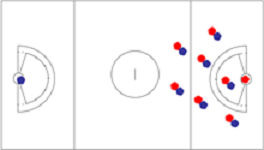

FIL Rules will be used with the following modification:
The maximum roster is 12 people i.e. 4 substitutes plus a maximum 8 players on the pitch at the same time, one of which may be a GK.
If the 8 a-side team is a mixed (women & men) team – a maximum of 3 men is allowed on the pitch at the same time, one of which must be a GK. This means a maximum of 2 men out field and 1 in goal.
Rule 18 A. 1 A team must not have more than 5 attack players below/goal side of the restraining line in their offensive/attacking end of the field.
Rule 18 A.2 A team must not have more than 6 defence players below/goal side of the restraining line in their defensive end of the field. One of these 6 players is usually, but not necessarily the goalkeeper.
Guidance: If a team chooses to play without a goalkeeper, they may have 6 field players in their defensive end. However, an unprotected field player/deputy may never enter the goal circle to defend a shot on goal. (Rule 17.A.4.c)
Note: This means that, for a full strength team, with no-one serving a penalty, there will 2 “pairs” plus a GK behind the restraining line.
The image will float to the right of the text.